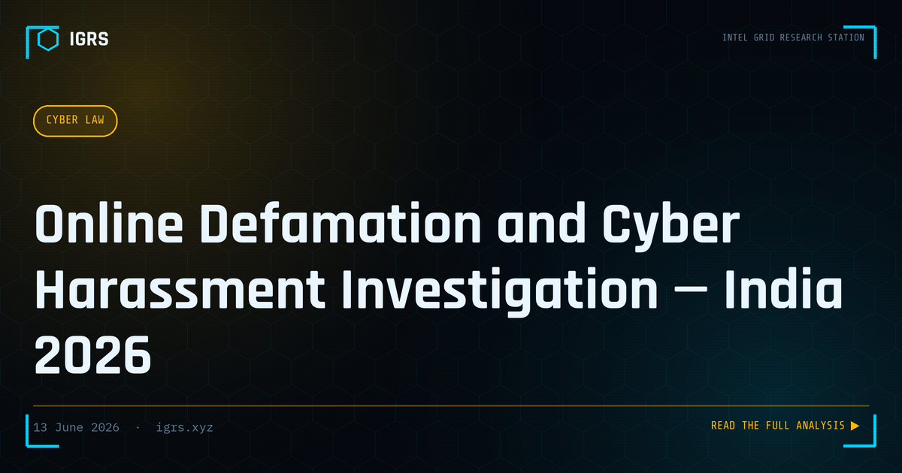

Online Defamation and Cyber Harassment Investigation — India 2026
Online defamation, cyber harassment, and coordinated trolling are growing crises in India. From political trolling campaigns to revenge porn to malicious reviews, understanding the legal framework and investigation methodology is essential. This guide covers the complete approach.
Legal Framework
| Offence | Section | Act |
|---|---|---|
| Defamation | S.353 | BNS 2023 |
| Criminal intimidation online | S.351 | BNS 2023 |
| Obscene content published online | S.67 | IT Act 2000 |
| Sexually explicit content | S.67A | IT Act 2000 |
| Stalking online | S.78 | BNS 2023 |
| Voyeurism | S.77 | BNS 2023 |
Important: Section 66A IT Act has been struck down by the Supreme Court in Shreya Singhal (2015). Do NOT use it in FIRs.
Evidence Preservation — Critical First Step
- Screenshot ALL defamatory content immediately — accounts get deleted
- Use Hunchly or SingleFile for complete webpage capture
- Archive URLs using archive.org/save
- Note exact URLs, timestamps, and usernames
- Hash all screenshots (SHA-256) for court admissibility
- Request Section 63 BSA certificate from platform
Platform Reporting
- Report content for removal — platforms must act within 24-36 hours under IT Rules 2021
- Significant Social Media Intermediaries must have India Grievance Officer
- If no action: complaint to Ministry of Electronics and IT (meity.gov.in)
OSINT — Identifying Anonymous Abusers
- Username cross-reference — same username on multiple platforms
- Writing style analysis — vocabulary, grammar patterns
- Timing patterns — active at specific hours (suggests timezone)
- Platform legal process — account registration IP, creation date
- Network analysis — who does the account interact with
Frequently Asked Questions
What is the law for online defamation in India?
Section 353 BNS 2023 covers defamation (replaced IPC 499/500). For online specific harassment, Section 67 IT Act covers obscene content, Section 78 BNS covers stalking, and Section 351 BNS covers criminal intimidation. Section 66A is struck down and cannot be used.
Can I file FIR for trolling and harassment on social media?
Yes. Online harassment, threats, and defamation are covered under BNS and IT Act sections. File FIR at cyber cell with all evidence preserved (screenshots with timestamps, URLs). Cybercrime.gov.in also accepts online complaints.
Can anonymous social media accounts be traced in India?
Yes, with proper legal process. Law enforcement can request platform account registration data (IP, phone number, creation date) through Meta, Twitter/X, Google LEA portals. IP addresses can be traced to subscriber through ISP records.